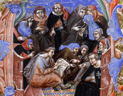

|
Con la segnatura Preziosi si indica non una particolare collezione,
ma un gruppo di documenti provenienti da diversi fondi archivistici,
che, nel corso degli anni, sono stati tolti dai depositi e collocati
a parte in un apposito armadio per garantirne una migliore conservazione
e una più efficace tutela.
Si tratta di materiale di varia natura, proveniente soprattutto
dagli archivi di alcuni ospedali romani; vi si possono trovare
sia codici scritti e miniati nel medioevo che documenti di natura
diversa (catasti di case, una collezione di autografi, un album
di disegni di Pinelli) risalenti all'età moderna.
Tra i pezzi più rilevanti, si segnalano i quattrocenteschi statuti
e libri di anniversari di alcune confraternite (S.mo Salvatore,
S. Maria delle Grazie), alcuni manoscritti di carattere liturgico
(sec. XI) e giuridico (secc. XIV-XV) appartenenti al fondo del
S.mo Salvatore.
Consulenza sul fondo: Angela Lanconelli
Progetto della base di dati: Paolo Buonora
Immissione ed elaborazione dati: Vincenzo De Meo e Fabio Simonelli
Acquisizione immagini: Laura Primangeli
Coordinamento: Vincenzo De Meo
Sviluppo applicativo: Stefano Tonazzi
Progettazione e assistenza sistemistica: Leonardo Valcamonici
(CASPUR)
|
|

|